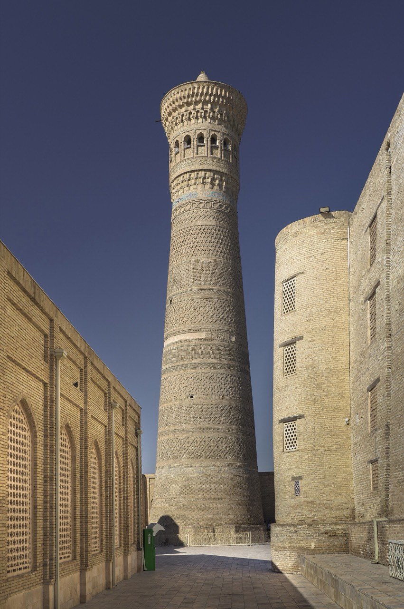

Самарканд · Бухара · Хива · Ташкент
Там, где караваны
встречали звёзды
Двадцать пять веков торговли, науки и изразцовой лазури — на одном маршруте длиной около 1 000 километров.
Четыре жемчужины
Города маршрута
У каждого города своя страница: места, советы, карта и галерея.
0лет Самарканду (юбилей 2007 года)
0города маршрута в списке ЮНЕСКО
0год постройки минарета Калян
0мест с точками на карте
Что посмотреть
Места, ради которых едут
Хронология
Коротко о большой истории
Мараканда
Основан город, который греки позже назовут столицей Согдианы.
Рождение Шёлкового пути
Караванные дороги связывают Китай со Средиземноморьем через оазисы Мавераннахра.
Золотой век науки
Аль-Хорезми, Ибн Сина и аль-Бируни — выходцы из этих земель.
Эпоха Тимуридов
Самарканд — столица империи, Улугбек строит обсерваторию.
Независимость
Узбекистан — независимое государство; исторические центры открыты путешественникам.
Когда ехать
Выберите сезон
Готовые программы
Популярные маршруты

Планировщик
Соберите поездку за пару минут
Выберите города, дни и уровень — посчитаем итог, расстояния и ориентировочный бюджет.